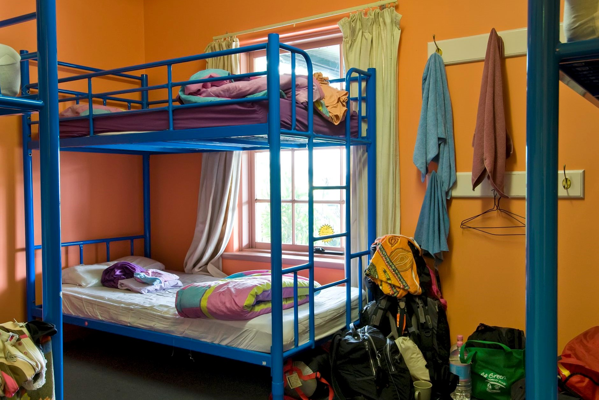
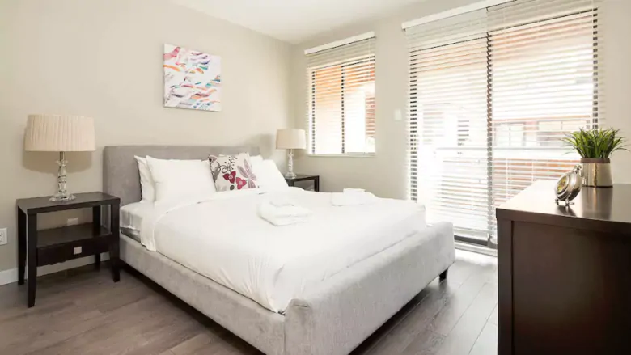

Accomodation

Hostel:
Hostels are a cheap living place. There are a variety of hostels in the UK and most are quite cheap. You will get a bed space but live in the same room with strangers. There are kitchens, living rooms, reading places and so on in the hostel. Even, if you are lucky, some hostels will hold special activities. I had once joined an interesting activities called pub crawling. The employee in the hostel took us to three different bars to drink and chat. It was interesting. However, the disadvantage is that you need to be more careful because you live with strangers.

Airbnb is also a good APP to find a living place. Some people living in the UK will let the empty rooms of their houses to others. You can get information on Airbnb. There are two types I’ve ever lived. One is that you will live in a room of a house. The house owner shares his spaces for travelers. The other is that you will get a complete house to live. The house owner doesn’t live in that house, so he rents it for travelers. My experience in these two houses was great, because the environment is clean and comfortable and the owners are kind and friendly.